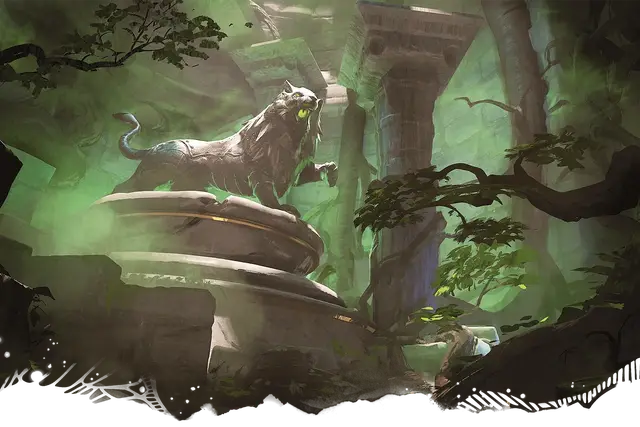

Зависть
Envy
Большой Монстр, без мировоззрения, именной НИП

Класс Доспеха 19 (природный доспех)
Хиты 114 (12к10 + 48)
Скорость 40 футов
| мод | спас | ||
|---|---|---|---|
| СИЛ | 20 | +5 | +5 |
| ЛОВ | 11 | +0 | +0 |
| ТЕЛ | 18 | +4 | +4 |
| мод | спас | ||
|---|---|---|---|
| ИНТ | 2 | −4 | −4 |
| МДР | 12 | +1 | +1 |
| ХАР | 7 | −2 | −2 |
Навыки Восприятие +4
Иммунитет к состояниям окаменение
Чувства тёмное зрение 60 футов, пассивное Восприятие 14
Языки Общий, Сильван
Опасность 5 (1800 опыта)
Бонус мастерства +3
Особенности
Растаптывающий рывок. Если Зависть переместится как минимум на 20 футов по прямой к существу, а затем в том же ходу попадет по нему атакой укусом, эта цель должна преуспеть в спасброске Силы Сл 16, иначе будет сбита с ног. Если цель сбита с ног, Зависть может бонусным действием совершить по ней ещё одну атаку укусом.
Действия
Укус. . Рукопашная атака оружием: +8 к попаданию, досягаемость 5 футов, одна цель. Попадание: 18 (2d12 + 5) колющего урона.
Когти. . Рукопашная атака оружием: +8 к попаданию, досягаемость 5 футов, одна цель. Попадание: 16 (2d10 + 5) дробящего урона.
Окаменяющее дыхание (перезарядка 5–6). Зависть выдыхает окаменяющий газ 30-футовым конусом. Все существа в этой области должны преуспеть в спасброске Телосложения Сл 13. При провале цель начинает превращаться в камень и становится опутанной. Опутанная цель должна повторить спасбросок в конце своего следующего хода. При успехе эффект на этой цели оканчивается. При провале цель становится окаменевшей, пока не будет вылечена заклинанием высшее восстановление [greater restoration] или подобной магией.
Описание
Железный лев, Зависть, - один из двух стражей, которых Зибильна создала, чтобы присматривать за своим садом в ее отсутствие. Когда Зыбильна застыла во времени, ее стражи появились из своих соответствующих демипланов, чтобы выполнить свой долг.
Железный лев говорит на Общем и Сильване, называя себя местоимениями "мы" и "нас".
Зависть не любит своего близнеца, Гнева, но магия Зибильны не позволяет им причинить вред друг другу. Когда персонажи впервые удостаивают железного льва своим присутствием, он требует от них почтения и приказывает им преклонить перед ним колени. Если персонажи выполняют команды Зависти, лев доволен и позволяет им оставаться в его присутствии. Персонажам, которые не показывают этого почтения, приказывают немедленно покинуть башню, и лев нападает на тех, кто отказывается.